المشاريع
Forked AI
مشروع يركّز على الذكاء الاصطناعي، يستكشف المساعدة البرمجية الذكية والاستدلال والبحث وحل المشكلات لتحسين مسارات تطوير البرمجيات.
Codak AI
مشروع مصمَّم لتحويل الأفكار المكتوبة بلغة طبيعية إلى مشاريع برمجية وتطبيقات عبر التطوير المدعوم بالذكاء الاصطناعي.
BioGuard
مبادرة تقنية بيئية تركّز على التنوع الحيوي والوعي البيئي وأدوات رقمية لرصد التحديات البيئية ومعالجتها. يقوم تصور المنصة على مسار: رصد ← تحقق ← تحرّك ← قياس.
Chrodis
تصور لتطبيق صحي يدعم إدارة الأمراض المزمنة عبر المعلومات الصحية والتذكيرات والتعرّف على الخدمات الصحية والتفاعل بمساعدة الذكاء الاصطناعي.
الخبرات التقنية
هندسة البرمجيات والويب
تطبيقات ويب تفاعلية وتجارب رقمية باستخدام JavaScript وReact وتقنيات الواجهة الأمامية الحديثة، مع الاهتمام بالبنية والكود القابل للصيانة والواجهات المتجاوبة.
الذكاء الاصطناعي والتطوير المدعوم به
دمج نماذج الذكاء الاصطناعي وواجهاته البرمجية في المنتجات: تطبيقات ذكية وبرمجة بمساعدة الذكاء الاصطناعي وأتمتة المسارات وحل المشكلات عمليًا.
تطوير بايثون وعلم البيانات
بايثون أداتي الأساسية في تطوير البرمجيات والتجارب التقنية، مع Pandas وNumPy وMatplotlib للمعالجة والتحليل والتصوير، وSQL للبيانات المنظمة.
تطوير التطبيقات متعددة المنصات
تصورات تطبيقات مبنية بـ Python وFlet تربط الواجهات والخدمات الخلفية وواجهات API والميزات الذكية.
تصميم الواجهات والوسائط الرقمية
Figma لتصميم الواجهات وتجربة المستخدم، وCanva للتواصل البصري، وAdobe Premiere Pro وAfter Effects للمونتاج والموشن جرافيك.
التصميم الجرافيكي
33 تصميمًا
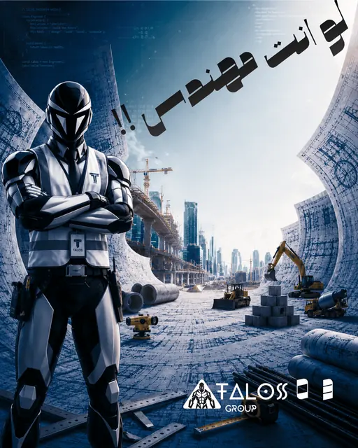
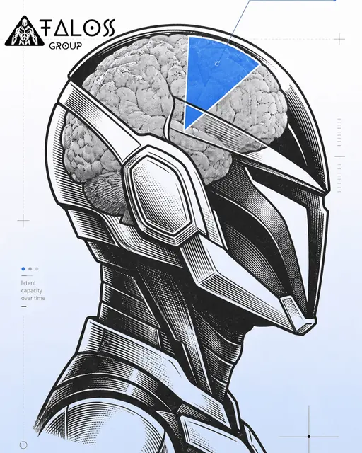
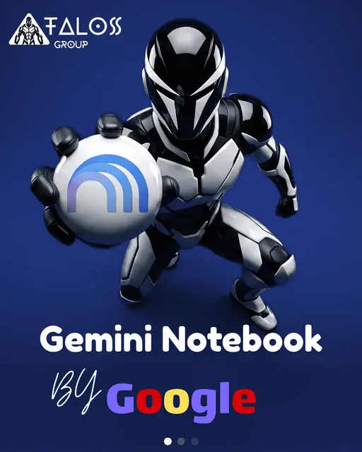
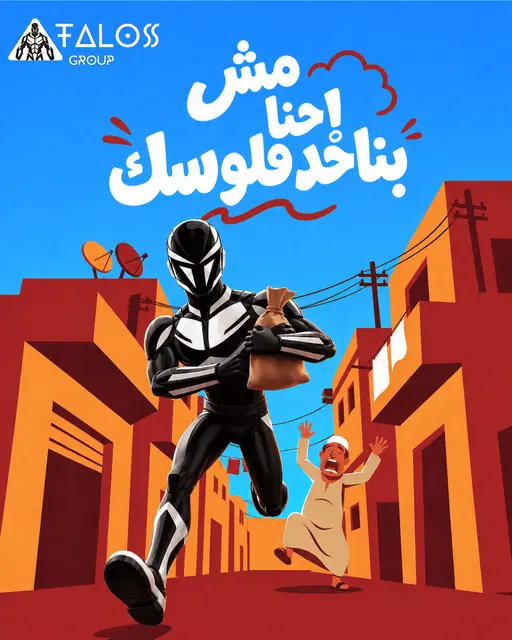
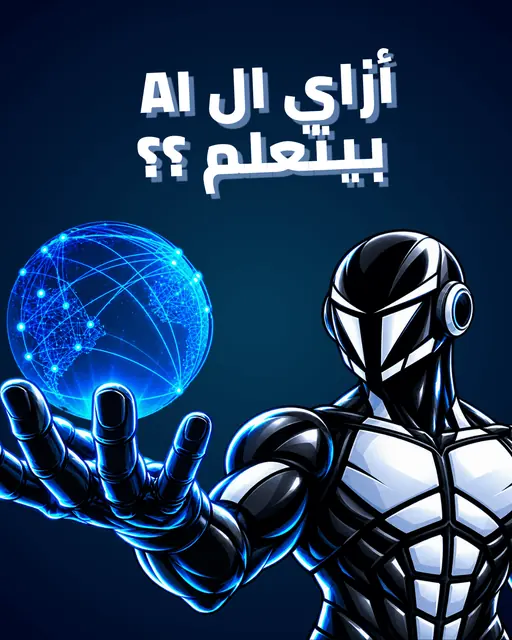
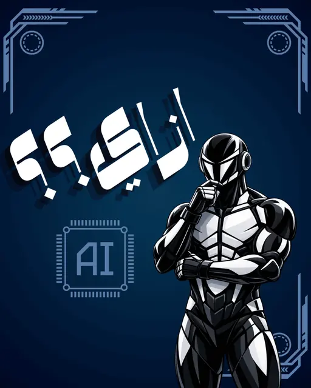
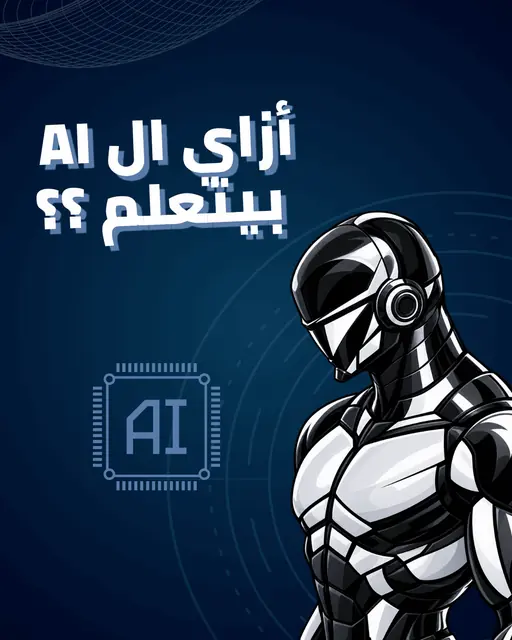
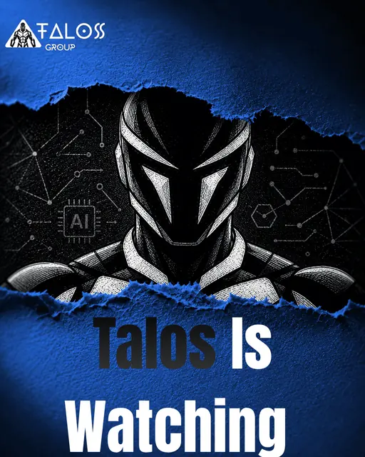
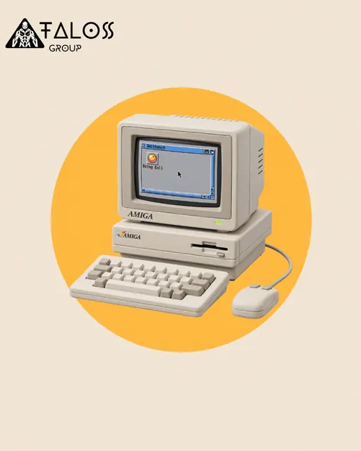
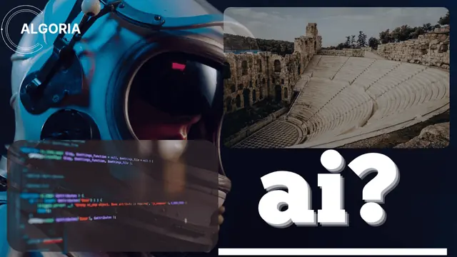
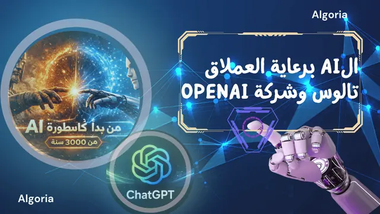
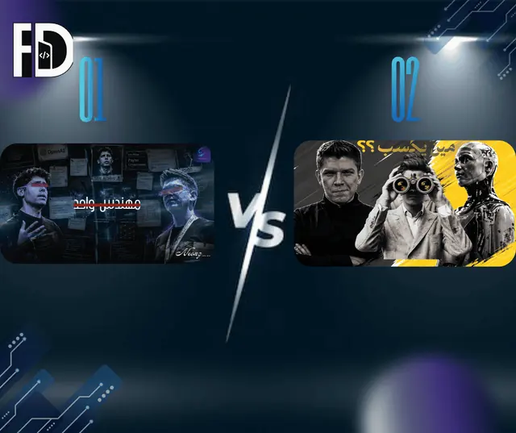
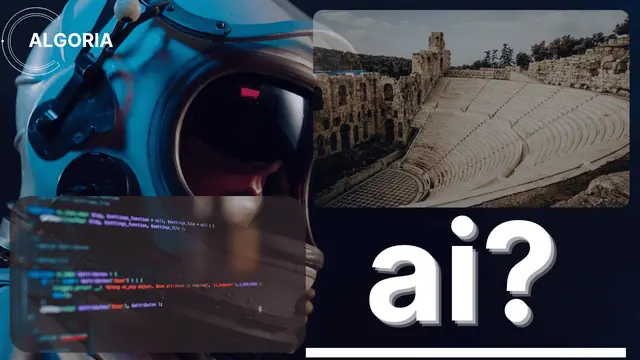
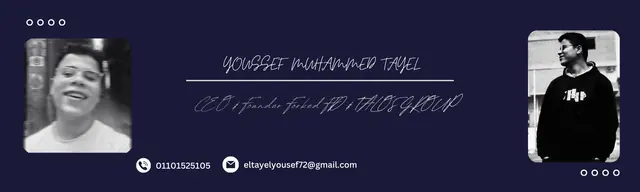
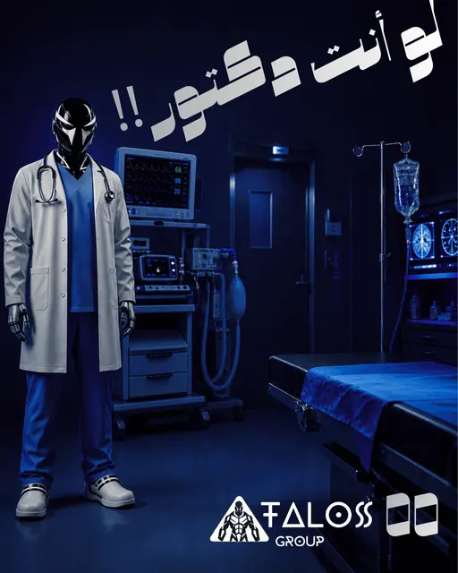
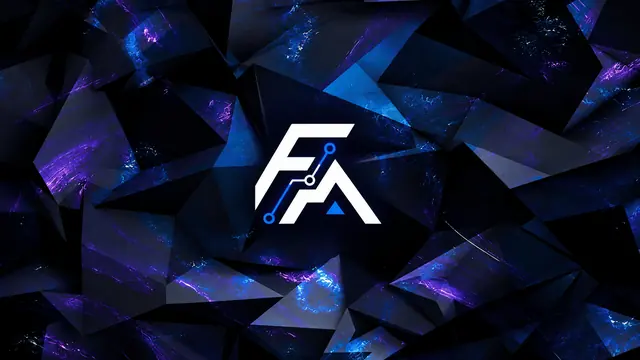
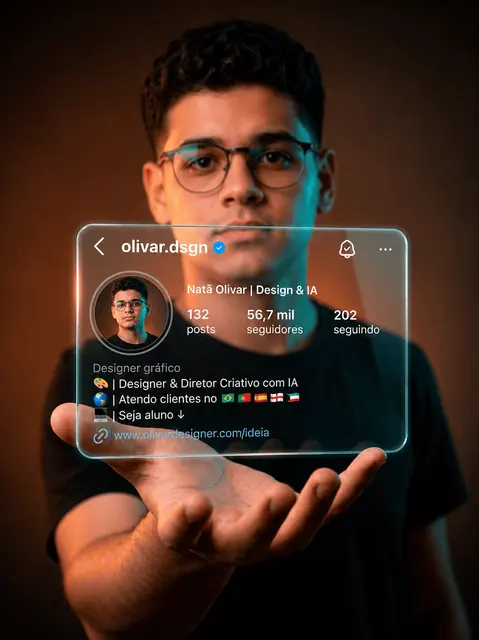
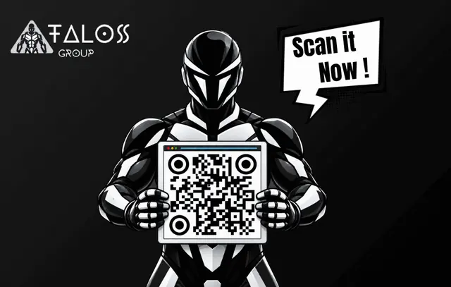
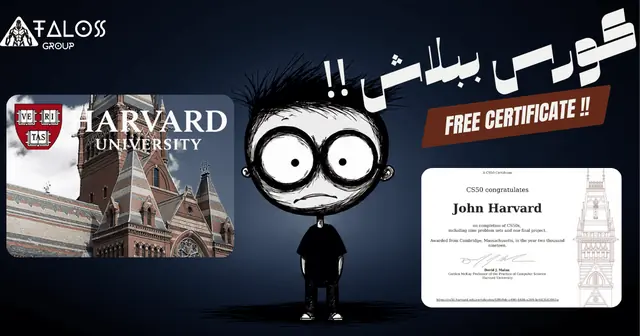
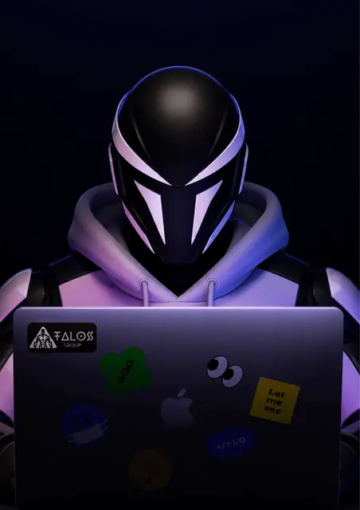
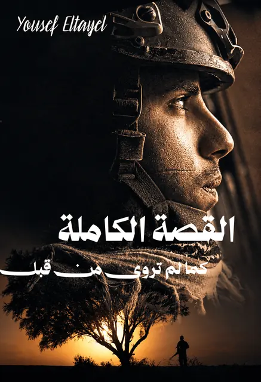
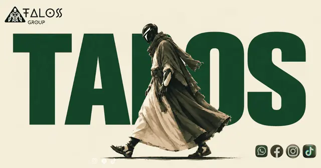
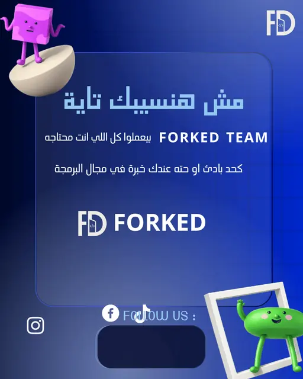
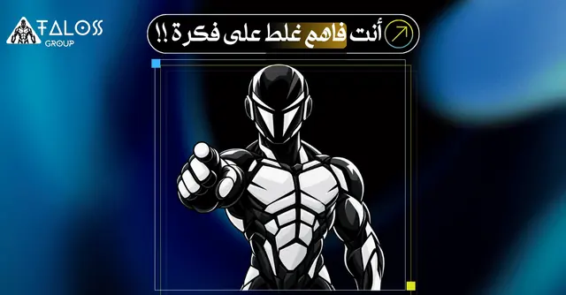
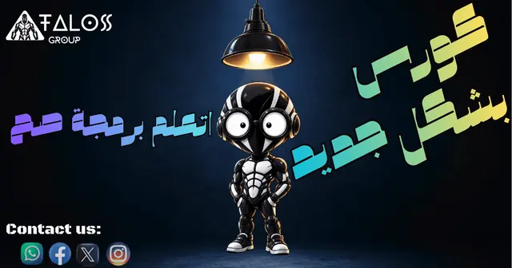
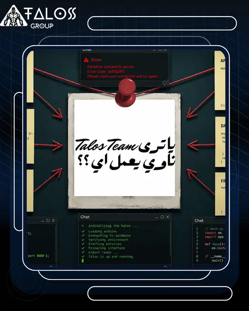
منشورات ومستندات مختارة
- BioGuard: نموذج العمل والمنصة
عرض من 12 صفحة عن BioGuard، منصة عمل بيئي مدعومة بالذكاء الاصطناعي تبدأ من مصر. يشرح مسار رصد ← تحقق ← تحرّك ← قياس، وخمس تجارب مترابطة (الإبلاغ عن الحوادث، خريطة تفاعلية، فرز بمساعدة الذكاء الاصطناعي، ملاحظات التنوع الحيوي، الحملات ولوحات المتابعة)، وأدوار المستخدمين وفرضيات الإيرادات التي ستُختبر في تجربة تجريبية.
- Healthic: مشاركة في مسابقة Digitopia
مشاركة من 8 صفحات بالعربية في مسابقة (الفريق 0، مجال البرمجيات والذكاء الاصطناعي، تحدي «صحتنا بذكاء»). Healthic تطبيق لمرضى الأمراض المزمنة في مصر: موسوعة طبية وحوار مع طبيب ذكي وتذكير بالأدوية، مبني بـ Python وFlet ليعمل على منصات متعددة.
- الاتحادات الطلابية وطالب عالمي متجذر
عرض بحثي من 32 صفحة بالعربية عن الاتحادات الطلابية المدرسية وفكرة الطالب العالمي المتجذر في هويته. يتناول التعريف والإطار النظري والشعار والتفكير والسلوك، ثم التطبيق العملي داخل المدرسة.
- كورس برمجة بايثون: الجلسة الأولى
شرائح الجلسة الأولى من كورس برمجة بايثون، تتضمن الفرق بين المطوّر والمبرمج (Coder).
- كورس نماذج HTML
درس من 35 صفحة عن نماذج HTML: كيف تجمع النماذج مدخلات المستخدم، الحقول النصية والتسميات وغيرها، مع أمثلة كود في VS Code.
- تالوس جروب: مقدمة في HTML
مقدمة من 22 صفحة في HTML لتالوس جروب: البنية والعناصر والعناصر الفارغة والسمات (href وsrc وwidth/height وalt وstyle وtitle) ومستندات HTML وتعريف doctype.
- Forked FD: شهادة إتمام كورس بايثون
شهادة إتمام الكورس التي تمنحها Forked FD لكورس مقدمة في برمجة بايثون، موقّعة من يوسف الطايل بصفته الرئيس التنفيذي.
- عرض مركز صحي (عيادة Fauget)
عرض تصوري من 10 صفحات لمركز رعاية طبية: نبذة عن العيادة والرعاية الشاملة والتقنيات الحديثة والفريق الطبي والمرافق العصرية.
- تعلّم العلوم: رحلة الإلكترون
شرح علمي من 13 صفحة بالعربية عن الدوائر الكهربائية (الوحدة الثانية: التيار والمقاومة وفرق الجهد)، مقسّم إلى محطات رحلة مع رسوم توضيحية ونصائح لتجنب أخطاء الامتحانات.
الشهادات والتطوير المهني
- نظرة عامة على الذكاء الاصطناعي — Huawei ICT Academy
- أساسيات برمجة بايثون — Huawei ICT Academy
- تمثيل المعلومات وتنظيم البيانات — Huawei ICT Academy
- تمثيل المعلومات وتنظيم البيانات (برنامج CRA التدريبي) — Huawei ICT Academy
- إدارة البيانات وتحليلها — Huawei ICT Academy
- أساسيات المسار المهني في تطوير البرمجيات من Microsoft وLinkedIn — LinkedIn Learning · Microsoft
- مبادرة أشبال مصر الرقمية: المستوى الثاني — Ministry of Communications and Information Technology (Egypt) · Udacity
- مقدمة في مهارات المسار المهني في تطوير البرمجيات — LinkedIn Learning
- ما هو علم البيانات؟ — IBM · Coursera
- هياكل البيانات في بايثون — University of Michigan · Coursera
- البرمجة للجميع (البدء مع بايثون) — University of Michigan · Coursera
- CS50: مقدمة في البرمجة بلغة بايثون — Harvard University (CS50)
- مقدمة في البرمجة باستخدام بايثون — University of Leeds · Click Start (FutureLearn)
- مقدمة في البرمجة باستخدام بايثون: كشف الدرجات — University of Leeds · Click Start (FutureLearn)
- مبادرة أشبال مصر الرقمية: المستوى الأول (البرنامج الصيفي) — Ministry of Communications and Information Technology (Egypt) · Almentor
- أساسيات بايثون 1 — Cisco Networking Academy · OpenEDG Python Institute